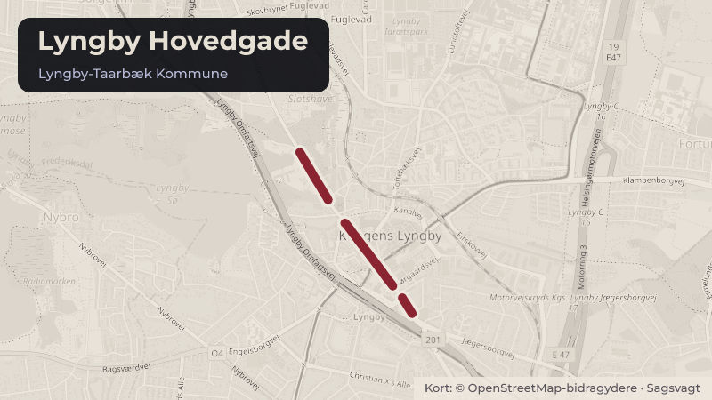

Besluttet 23. september, Byplanudvalget, Lyngby-Taarbæk
Lyngby Hovedgade 49A - Dispensation til udestue i tilknytning til restaurant

Kort fortalt
- Hvem
- Byplanudvalget, Lyngby-Taarbæk Kommune
- Hvornår
- Onsdag 23. september 2026
- Status
- Besluttet. Godkendt.
- Næste skridt
- En eventuel tilladelse til den ansøgte udestue vil blive givet som en planmæssig afgørelse og derefter byggetilladelse. Det vil i forbindelse med den videre behandling vurderes om der skal sendes høring til nærmeste naboer inden afgørelse.
Er noget forkert her? Skriv til os
Læs hele sagen Kommunens egen tekst
Indstilling
Forvaltningen foreslår, at det godkendes, at forvaltningen arbejder videre med projektet med henblik på en planmæssig godkendelse.
Beslutningskompetence
Byplanudvalget beslutter.
Problemstilling
Forvaltningen har modtaget ansøgning til permanent etablering af udestue i tilknytning til restaurant (bilag 1). Den nye udestue har karakter af et orangeri med markise som tag (bilag 2 og bilag 3). Udestuen har et areal på 82 m² med plads til ca. 40 spisende gæster. Udestuen vil være uopvarmet, dog med terrassevarmere, der muliggør ophold året rundt.
Den gældende lokalplan 141 fastsætter bestemmelser vedrørende placering af bebyggelse samt ubebyggede arealers udformning og benyttelse. Udestuen placeres udenfor de fastsatte byggefelter i lokalplanen, på areal der er udlagt til torveareal.
Restaurantens eksisterende udeserveringsareal ønskes indrettet, så det kan anvendes mere optimalt og i en større del af året. Der er på arealet etableret en markise uden forudgående tilladelse. Ansøger oplyser, at projektet ikke indebærer en udvidelse af udeserveringsarealet, men alene en forbedring af dets anvendelighed og kvalitet. En udvidet sæson vurderes af ansøger samtidig at kunne understøtte en mere stabil drift uden for sommerhalvåret.
Løsninger
Den nye udestue opføres som en fritstående let konstruktion, der danner klimaskærm omkring en markise på egen stålkonstruktion, som fungerer som tag. Facaderne udføres med lodret træbeklædning i ubehandlet naturtræ, som med tiden vil patinere. De bærende søjler og øvrige synlige konstruktioner udføres også i træ. Vinduesrammer, bundrammer og andre slanke profiler udføres i sort aluminium.
Facaden i udestuen mod stipassagen planlægges udført med faste partier. Facader mod parkeringsarealet udføres med glas-foldedøre, der kan åbnes, så arealet umiddelbart omkring
udestuen kan blive en integreret del af området med indretning til bl.a. udeservering. Ansøger begrunder ansøgningen med, at udestuen derved vil fremstå med et enkelt og roligt formsprog, i en moderne og let konstruktion samt at den lave bygningskrop og de transparente facader bidrager til en åben og imødekommende karakter, hvor inde- og uderum flyder naturligt sammen. Ideen er derved, at udestuen disponeres som et fleksibelt opholds- og caféområde med mulighed for både ophold inde og ude. De store foldedøre kan åbnes op og vil skabe en direkte forbindelse til pladsdannelsen omkring udestuen.
Det fremgår af ansøgningen, at der omkring udestuen vil blive etableret to typer plantekasser med Dukke-Elm Jacqueline Hillier, lavendler samt Arkitektens trøst (Fallopia Baldschuanica) og Blå Bjørnegræs (Festuca Glauca Elijah Blue). Plejeplan for planter fremgår ligeledes af ansøgningen.
Forvaltningen vurderer, at den nye udestue vil være med til at styrke områdes karakter af handelsplads og bidrage med byliv og styrke detailhandlen. Der er i vurderingen lagt vægt på, at udestuen med foldedøre vil kunne åbnes op mod den resterende plads og derved kan blive en integreret del af en samlet plads der understøtter kommunens vision om byudvikling i balance.
Strategisk ramme
Projektet ligger i tråd med udviklingsplanen for Kongens Lyngby Centrum med en vision om at gøre Kongens Lyngby til et levende og oplevelsesrigt centrum, hvor byrummene udnyttes til ophold og understøttelse af handels- og bylivet.
Videre proces
En eventuel tilladelse til den ansøgte udestue vil blive givet som en planmæssig afgørelse og derefter byggetilladelse. Det vil i forbindelse med den videre behandling vurderes om der skal sendes høring til nærmeste naboer inden afgørelse.
Såfremt det ansøgte, ikke godkendes, vil forvaltningen meddele afslag.
Økonomi
Sagen har ingen bevillingsmæssige konsekvenser.
Punkt 10: Kanalvej 5 - Dispensation til ventilationskanal på facade (Beslutning) 02.34.02-P19-32-26 Fraværende: Troels Bennike (I)
Beslutning
Godkendt.
Kilde: Lyngby-Taarbæk Kommune, Byplanudvalget, referat fra mødet onsdag 23. september 2026, punkt 9. Læs den originale sag hos kommunen.
Steder i sagen: Lyngby Hovedgade